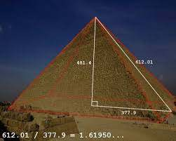
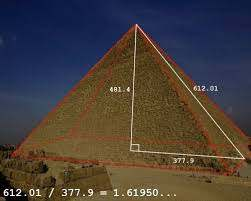
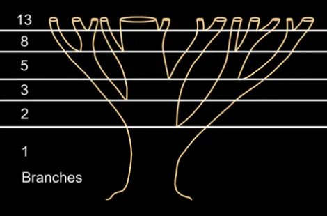
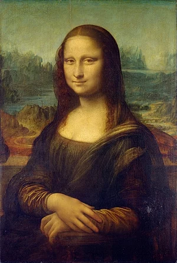
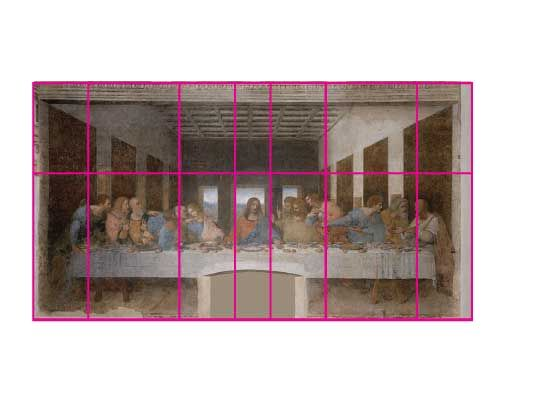
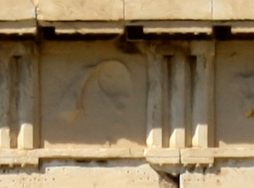
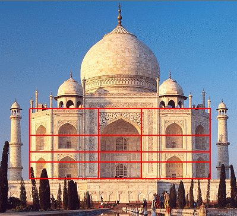
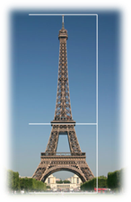

“The Fibonacci Sequence turns out to be the key to understanding how nature designs... and is... a part of the same ubiquitous music of the spheres that builds harmony into atoms, molecules, crystals, shells, suns and galaxies and makes the Universe sing.”
― Guy Murchie, The Seven Mysteries of Life: An Exploration of Science and Philosophy
 

NATURE
Flower petals
Phi appears in petals on account of the ideal packing arrangement as selected by Darwinian processes; each petal is placed at 0.618034 per turn (out of a 360° circle)
Spiral Galaxies
The Milky Way has several spiral arms, each of them a logarithmic spiral of about 12 degrees. As an interesting aside, spiral galaxies appear to defy Newtonian physics.
Shells
Snail shells and nautilus shells follow the logarithmic spiral, as does the cochlea of the inner ear.
Tree branches

The Fibonacci sequence can also be seen in the way tree branches form or split. A main trunk will grow until it produces a branch, which creates two growth points
ART
Da Vinci's Artwork


Leonardo da Vinci, like many other artists throughout the ages, made extensive use of the Golden Ratio to create pleasing compositions.
- In The Last Supper, the figures are arranged in the lower two thirds (the larger of the two parts of the Golden Ratio), and the position of Jesus is perfectly plotted by arranging golden rectangles across the canvas.
ARCHITECTURE
Great Pyramid of Giza
the Great Pyramid has a base of 230.4 meters (755.9 feet) and an estimated original height of 146.5 meters (480.6 feet). This also creates a height to base ratio of 0.636, which indicates it is indeed a Golden Triangles, at least to
within three significant decimal places of accuracy
Parthenon

Golden ratio rectangle that appear in the design work above the columns is a compelling evidence that the Greeks knew of, and applied, the golden ratio in the construction of the Parthenon.
Taj Mahal

The main building of the Taj Mahal was designed using the Golden Ratio. This is why it looks so perfect. The rectangles that served as the basic outline for the exterior of the building were all in the Golden Proportion
Eiffel Tower

Despite its enormous height, Eiffel Tower doesn’t look out of proportion, all thanks to the golden ratio.
The base is broader while it narrows down to the top, perfectly following the golden section & as needed for stability.